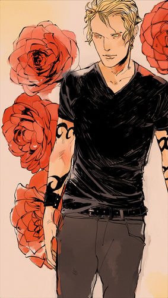

Джейс Эрондейл
Я не знаю кто я. Я смотрю на себя в зеркало и вижу Стивена Эрондейла, но я веду себя как Лайтвуд, и говорю как подобие моего отца, Валентина. Поэтому я вижу, кто я в твоих глазах, и пытаюсь быть тем человеком, потому что ты веришь в этого человека, и я думаю, что веры будет достаточно, чтобы сделать меня тем, что ты хочешь.
 Джейс Лайтвуд Эрондейл считается самым лучшим Сумеречным Охотником своего времени и героем в Смертельной и Темной войне. В настоящее время, он является со-главой Института Нью-Йорка, вместе со своей девушкой Клэри Фэирчайлд.
Характер и привычки
Джейс всегда был независимым и как-то самоуправляемым, обученный не предавать себя эмоциям, когда он был ребенком.
У Джейса резкий, защитный нрав, кислотное терпение, и очень саркастичное поведение, когда он того хочет. Создавая впечатление от проявления презрения большинства людей в его адрес, Джейса видят очень самовлюбленным, эгоистичным, и слишком уверенным в себе, веря, что он "самый лучший Сумеречный Охотник, когда-либо существовавший" и выше всех. Достаточно правдиво, Джейс - превосходит в битве, это то, для чего он тренировался с малых лет, и что полюбил за эти годы. Он также демонстрирует садистские тенденции, которые он получил при воспитании Валентином.
Несмотря на это, у Джейса сильный моральный стержень. Он исполнительный и справедливый, готовый принять правильное решение, и жертвовать, если к этому приведет ход событий. Хоть он и может быть временами мстительным, он жесток только, чтобы защитить тех, кого любит.
Его тщеславная наружность скрывает глубокую внутреннюю ненависть, которая усиливается после того, как он ошибочно верил что он демонический, виня кровь демона за его конфликтующие мысли и его, тогда предположенные, инсестские чувства по отношению к Клэри. Даже после того, как это было опровергнуто и противоречиво фактом, что он на самом деле наполовину ангел, даже больше чем обычные люди его вида, Джейс продолжил носить тяжесть лжи, с которой он жил так долго. Пример этого - любовь Джейса к человеку который вырастил его, и который, как он верил был его отцом, Валентину. Несмотря на издевательства и обман, Валентин был временами добрым и проявлял любовь к нему, и Джейс находил себя тоскующим по этой части его отца.
Как Валентин и Лайтвуды, Джейс так же выказывал свой характер сноба по отношению к примитивным и жителям Нижнего Мира, хотя у него недостаток экстремистких тенденций. Под легкомысленной наружностью Джейса лежит душа в постоянных истязаниях, наполненная глубоким гневом, что он большинство времени контролирует и направляет в битву и поражение демонов и так же, иногда, его саркастичные и гадкие замечания. Джейс расслабляется и успокаивает свои нервы ввязываясь в драки, что как Клэри заметила для Джейса "как секс для нормальных людей".
Зная о своей красоте, Джейс был так же когда-то немного галантным, и немного заигрывающим, по отношению к женщинам, которых он встречал до Клэри. Его харизма, хорошая внешность, и привлекательность сделало довольно-таки любимчиком дам. Однако, обученный что "полюбить - это уничтожить" в раннем возрасте, Джейс держал всех, кроме Лайтвудов, на расстоянии руки, никогда не формируя эмоциональной привязанности более, чем на краткий период времени, если вообще. Его характер сильно изменился после того, как он встретил Клэри. Изабель даже говорила, что Джейс был апатичен к другим раньше, не думая о других кроме Лайтвудов, до тех пор пока он не встретил Клэри, чье присутствие встряхнуло Джейса, который оказался очень страстным человеком, любя Клэри на очень глубоком и страстном уровне когда он влюбился в нее и делает все в его силах чтобы защитить ее от опасности, объем его любви к Клэри даже удивляет его близких.
Внешность
Джейс известен по сильному титулу его привлекательности. Его описывают с тонкими, кудрявыми, золотыми блондинистыми волосами, длинными ресницами и глазами, которые выглядят золотыми при свете, из-за магических экспериментов, проведенных на нем, и ангельской крови в его венах. У него стройное, мускулистое строение и он примерно метр восемьдесят ростом. Его лицо часто описывают красивым, сексуальным, прекрасным и с хорошими чертами. Клэри часто ссылается на него как красивого и похожего на льва с узким ртом. Как все другие Сумеречные Охотники, он покрыт тонкими, серебряными шрамами от нанесения магических рун годами с помощью стеле для битв и исцеления, так же как постоянных рун, что выглядят как тату.
Единственный недостаток в его лице, как заметила Клэри, это маленький осколок в его переднем левом резце. Говорят что Клэри легче от этого, так как это доказательство того, что он не не-человечески красив и безупречен. Говорят что Джейсу семнадцать лет, хотя это было предположено когда он был сыном Валентина (или Майкла Вэйланда), а его настоящий возраст является на несколько лет младше чем Джонатан Вэйланда и на год или больше старше Клэри. После "математического подсчета" просмотрев через вещи его отца Стивена, и время произошедшего Восстания, он узнал, что родился в январе, и на шесть месяцев старше Клэри.
Джейс так же известен как левша (как Валентин). Говорят, что он выглядит как его настоящий отец, Стивен Эрондейл, кроме того что вокруг глаз, где он выглядит как его мать, Селин Эрондейл.
У него есть родимое пятно в виде звезды на его левом плече. Это пятно произошло от контакта дальнего предшественника Джейса, Уилла Эрондейла, с ангелом Итуриэлем.